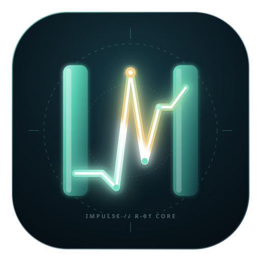
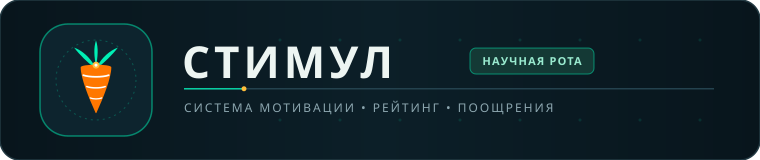
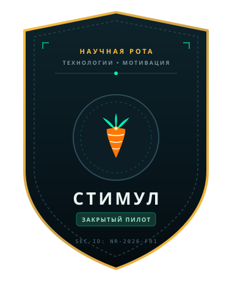
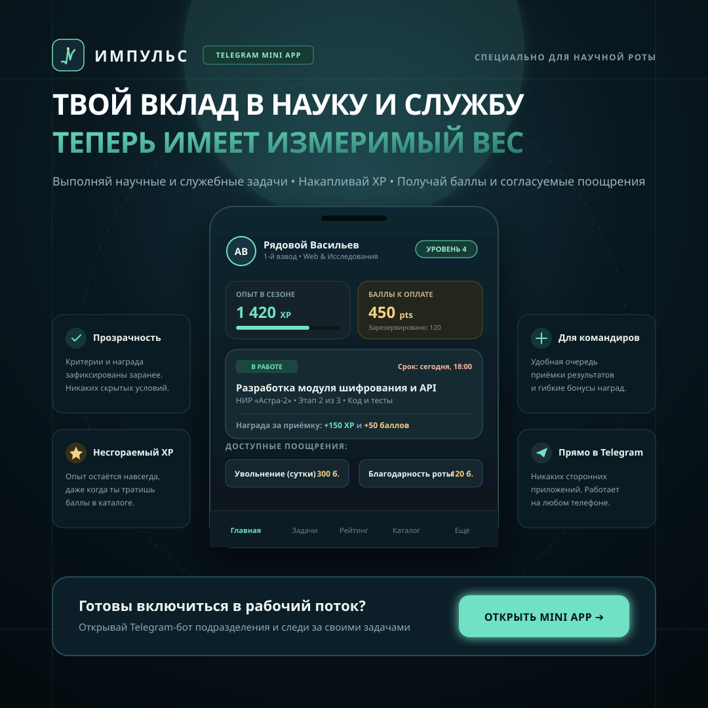
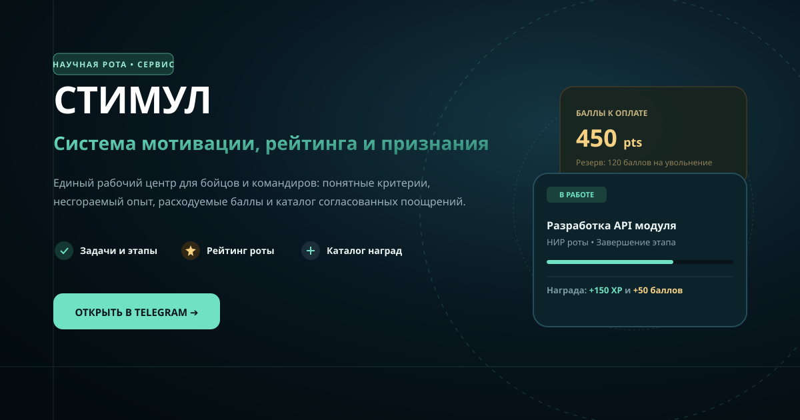

Полный комплект фирменного стиля, векторных логотипов, позиционирования и готовых рекламных материалов для Telegram Mini App научной роты.
Высокотехнологичный знак: буква «И», совмещённая с энергетическим импульсом/осциллограммой, шевронной геометрией и золотым узлом признания.

Иконка для Telegram-бота, аватарки канала, фавиконки и экранов загрузки.

Фирменный блок со знаком, названием «ИМПУЛЬС» и дескриптором для шапки сервиса.

Эмблема для презентаций, сертификатов, физических нашивок и наградных грамот.
Семантическая проработка названия «Импульс», альтернативные варианты и рекламные слоганы для разных целевых групп.
Импульс в физике (\(p = mv\)) — мера механического движения и воздействия. В электронике — сигнал, запускающий процесс. Олицетворяет научную деятельность роты.
«Импульс к действию» — побуждение к проявлению инициативы, качественному закрытию задач и профессиональному росту военнослужащего.
Вклад каждого бойца складывается в общий импульс развития лаборатории/роты. Начисление XP и баллов дает ритм и динамику.
| Название | Характер / Тон | Плюсы | Дескриптор | Статус |
|---|---|---|---|---|
| ИМПУЛЬС (IMPULSE) | Динамичный, энергичный, научный | Уже зафиксирован в коде и планах; ёмкое слово; легко запоминается | Система признания и задач научной роты | Рекомендовано |
| ВЕКТОР-Н (VECTOR) | Строгий, геометрический, военный | Прямая ассоциация с направлением движения и целеустремленностью | Платформа координации исследований | Альтернатива 1 |
| СИНТЕЗ (SYNTHESIS) | Академичный, глубокий, основательный | Синтез службы и науки, синтез личного вклада в общий результат | Цифровая среда достижений научной роты | Альтернатива 2 |
| КВАНТ (QUANT) | Лаконичный, технологичный, дискретный | Ассоциация с квантованием результатов (каждая задача — квант вклада) | Учёт результатов и наград | Альтернатива 3 |
Готовые графические баннеры в векторном формате SVG для анонсов, каналов и презентаций.

Оптимизирован для публикации в Telegram-каналах и чатах роты. Демонстрирует карточку задачи, кошелёк баллов и ключевые преимущества.

Стандарт Open Graph (OG) для превью ссылки при отправке в Telegram, а также титульный баннер для слайдов презентации.
Готовые к отправке посты в закрытые каналы и чаты научной роты (со смайликами, форматированием и призывами к действию).
Палитра выдержана в концепции «технологичного исследовательского центра» с глубоким морским фоном и мятно-золотыми акцентами.
Основной цвет холста и шапки Telegram WebView.
Поверхности карточек, меню и списков задач.
Главные кнопки, шкалы прогресса и акценты энергии.
Расходуемые баллы кошелька, призовые места и бейджи.
Высококонтрастный текст первого уровня.
Вторичные подписи, метаданные и метки времени.